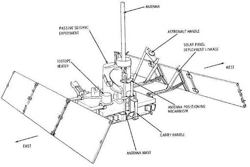

Objective:
When they explored the Moon, NASA’s Apollo astronauts left behind several instruments to collect geophysical data near each Apollo landing site. Our challenge was to develop an app for the public that plots the seismic data that these instruments transmitted back to Earth on an interactive 3-D digital moon globe.
A moonquake is the lunar equivalent of an earthquake (i.e., a quake on the Moon) although moonquakes are caused in different ways. They were first discovered by the Apollo astronauts. The largest moonquakes are much weaker than the largest earthquakes, though their shaking can last for up to an hour, due to fewer attenuating factors to damp seismic vibrations.
Information about moonquakes comes from seismometers placed on the Moon from 1969 through 1972. The instruments placed by the Apollo 12, 14, 15 and 16 missions functioned perfectly until they were switched off in 1977.
There are at least four kinds of moonquake:
1) Deep moonquakes (~700 km below the surface, probably tidal in origin)
2) Meteorite impact vibrations
3) Thermal moonquakes (the frigid lunar crust expands when sunlight returns after the two-week lunar night)
4) Shallow moonquakes (50–220 kilometers below the surface)
5)While these moonquakes may not be of natural lunar origin, they still provide valuable insights into the moon's seismic behaviour. This unexpected discovery contributes significantly to our knowledge of the moon's geological activity, which holds particular significance for future lunar exploration and development endeavours.
Head over to the main page to see our own representation of a virtual moon depicting the history of moonquakes recorded by NASA!
